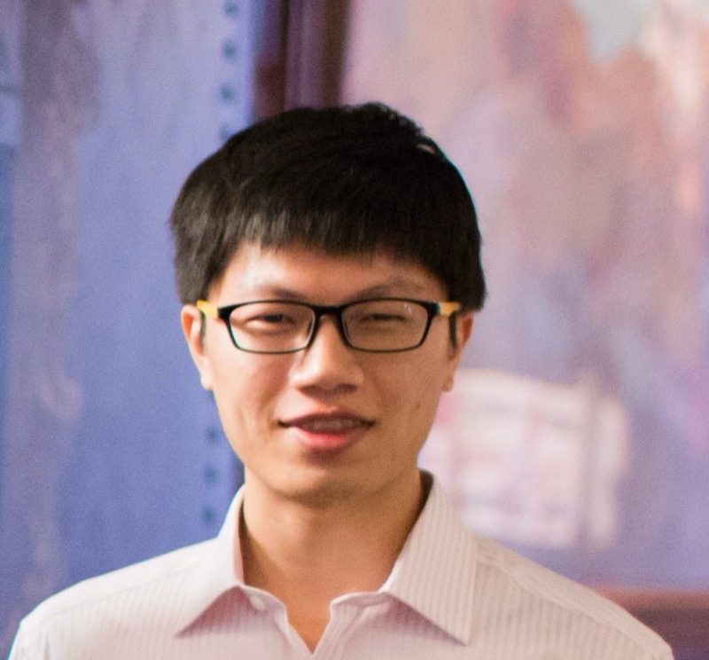

AABA4ET
Speakers
Invited talks at NeurIPS 2026 in Sydney
Invited talks
Confirmed speakers
Talk titles will be announced soon.

Diyi Yang
Assistant Professor, Computer Science Department, Stanford University
Title: TBD
Diyi Yang is an assistant professor in the Computer Science Department at Stanford University, also affiliated with the Stanford NLP Group, Stanford HCI Group and Stanford Human Centered AI Institute. Her research focuses on human-centered natural language processing and human-AI interaction. She is a recipient of IEEE “AI 10 to Watch” (2020), Microsoft Research Faculty Fellowship (2021), NSF CAREER Award (2022), an ONR Young Investigator Award (2023), and a Sloan Research Fellowship (2024). Her work has received multiple paper awards or nominations at top NLP and HCI conferences.

Yu Su
Associate Professor, Computer Science and Engineering, Ohio State University
Title: TBD
Yu Su is an Associate Professor in the Department of Computer Science and Engineering at the Ohio State University and a College of Engineering Innovation Scholar. Before coming to OSU, he was Senior Researcher at Microsoft Semantic Machines working on conversational AI. He received his PhD from University of California, Santa Barbara and his bachelor’s degree from Tsinghua University, both in Computer Science. His awards include the Outstanding Dissertation Award from UCSB and Best of IEEE ICDM 2019 Selection. His expertise includes natural language processing, artificial intelligence, conversational AI, and knowledge bases.
Wei-Peng Chen
Research Director, Fujitsu Research of America, Inc.
Title: TBD